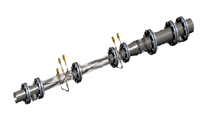
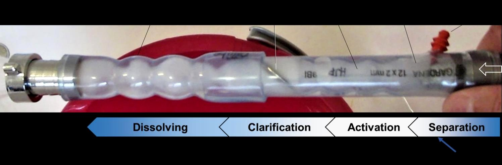

Neljä vaihetta, yksi putki, 0,7 sekuntia.
Hermeettisessä putkessa vesi pysyy hallittuna veden, pisaroiden ja kaasun seoksena — molekyylien kohtaamistodennäköisyys on korkea ja reaktiot tapahtuvat heti. Moduuli asennetaan nykyiseen putkistoon ja on helppo irrottaa ja puhdistaa.
Tuote, käytössä
OxTube pystyasennettuna suomalaisella laitoksella — ruostumatonta terästä, laipalliset moduulit, instrumentointi vieressä. Näkyvä kavennus on suutinvyöhyke, jossa kaasu kohtaa veden.


Moduulikokoonpano. Laipalliset osat pultataan nykyiseen putkistoon siinä järjestyksessä kuin prosessi vaatii — ja irtoavat yhtä helposti puhdistusta varten. Anturiportit pitkin linjaa.

Mistä se alkoi. Ensimmäinen prototyyppi todisti samat neljä vaihetta puutarhaletkuliittimillä. Koko tarina →
Tekniset tiedot
Luvut jotka insinööri kysyy ensin. Arvot vahvistetaan SansOxilta — paikanpitäjät merkitty.
| Suure | Arvo |
|---|---|
| Virtaama-alue | [LUKU] m³/h |
| Hapensiirto | [LUKU] kgO₂/kWh |
| Painehäviö | [LUKU] bar @ [LUKU] m³/h |
| Liitännät | DN[LUKU]–DN[LUKU] |
Periaatejulistus
Ninety percent of pharmaceuticals.
Seven tenths of a second.
Measured — not promised.
30 minuuttia, teknistä, maksutta
Tuo prosessikaaviosi ja annostelutavoitteesi — kerromme mihin kohtaan putki siinä istuu.